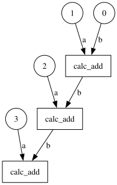

Workflows#
One of the most powerful but underused features of modern HPC job schedulers is dependency management: the ability to declare that job B should not start until job A has finished. SLURM supports this via the --dependency flag in sbatch (documentation), and Flux has an equivalent mechanism.
The challenge is that wiring up these dependencies manually — writing shell scripts that extract job IDs and feed them to subsequent sbatch calls — is tedious and error-prone. Most researchers end up waiting for the entire first batch to finish before submitting the next batch, leaving compute nodes idle.
executorlib’s approach: Dependencies are expressed naturally in Python by passing a Future object as the argument to a subsequent submit() call. The executor automatically translates this into a scheduler dependency. You write normal Python; the executor manages the job graph.
Learning objectives: After this notebook you will be able to:
Build dependency chains between Python functions using
Futureobjects as argumentsVisualise the dependency graph of a workflow
Use
FluxClusterExecutor’s persistent-queue feature to survive Python session restartsDecompose multi-output futures with
split_future()andget_item_from_future()Apply the as-completed pattern for exascale many-task workflows
Dependencies#
When the output of one function is passed as an argument to another, executorlib automatically creates a dependency: the second function will not be submitted to the scheduler until the first has completed and its result is available.
The mechanism is straightforward:
future_a = exe.submit(function_a, arg1)
future_b = exe.submit(function_b, future_a) # waits for future_a
future_c = exe.submit(function_c, future_b) # waits for future_b
This is equivalent to a SLURM dependency chain:
JOB_A=$(sbatch job_a.sh | awk '{print $NF}')
JOB_B=$(sbatch --dependency=afterok:$JOB_A job_b.sh | awk '{print $NF}')
JOB_C=$(sbatch --dependency=afterok:$JOB_B job_c.sh)
The executorlib version is shorter, less error-prone, and naturally expresses the logic of the workflow in Python rather than shell scripting.
The plot_dependency_graph=True option renders the dependency graph as a directed acyclic graph (DAG) — useful for verifying that the workflow structure is correct before committing to a long HPC run.
def calc_add(a, b):
return a + b
from executorlib import SingleNodeExecutor
with SingleNodeExecutor() as exe:
future = 0
for i in range(1, 4):
future = exe.submit(calc_add, i, future)
print(future.result())
6
with SingleNodeExecutor(plot_dependency_graph=True) as exe:
future = 0
for i in range(1, 4):
future = exe.submit(calc_add, i, future)
print(future.result())
None

FluxClusterExecutor#
The FluxClusterExecutor (and its SLURM equivalent SlurmClusterExecutor) handle dependencies differently from the FluxJobExecutor: they communicate dependencies directly to the Flux scheduler rather than managing them in-process.
What this means in practice:
When you submit a chain of dependent functions with FluxClusterExecutor, each function becomes a Flux job. Flux holds the dependent jobs in its queue and only releases them when their dependencies have been satisfied — even if the Python session is stopped in the meantime. This gives the workflow session-independence: you can close your notebook, go home, and Flux will continue executing the job chain overnight. When you reconnect and reload the Future objects from the cache, their results are already available.
Compare this with FluxJobExecutor, where the Python process must stay alive for the duration of the workflow because dependencies are tracked in-process.
from executorlib import FluxClusterExecutor
with FluxClusterExecutor() as exe:
future = 0
for i in range(1, 4):
future = exe.submit(calc_add, i, future)
print(future.result())
6
!flux jobs -a
JOBID USER NAME ST NTASKS NNODES TIME INFO
ƒ5DEigfq jovyan executorl+ CD 1 1 1.202s jupyter-janj-lanl-executorlib-tutorial-9ce2an8u
ƒ5A1vFAP jovyan executorl+ CD 1 1 1.175s jupyter-janj-lanl-executorlib-tutorial-9ce2an8u
ƒ56o7oew jovyan executorl+ CD 1 1 1.186s jupyter-janj-lanl-executorlib-tutorial-9ce2an8u
To demonstrate the session-independence of FluxClusterExecutor, the next cells use it without a with statement. The executor is created, work is submitted, then exe.shutdown(wait=False) is called immediately — the Python process does not wait for the jobs to finish. The submitted jobs continue running in the Flux queue. After checking the queue with flux jobs -a, a new executor instance is created to retrieve the results from the cache.
First, the cache is cleared to remove results from the previous run:
import shutil
shutil.rmtree("executorlib_cache")
exe = FluxClusterExecutor()
future = 0
for i in range(1, 4):
future = exe.submit(calc_add, i, future)
exe.shutdown(wait=False, cancel_futures=False)
!flux jobs -a
JOBID USER NAME ST NTASKS NNODES TIME INFO
ƒB7dQpUo jovyan executorl+ D - - depends:after-success=382906400768
ƒBAkHJrs jovyan executorl+ D - - depends:after-success=385037107200
ƒB4P8Ph1 jovyan executorl+ R 1 1 0.580s jupyter-janj-lanl-executorlib-tutorial-9ce2an8u
ƒ5DEigfq jovyan executorl+ CD 1 1 1.202s jupyter-janj-lanl-executorlib-tutorial-9ce2an8u
ƒ5A1vFAP jovyan executorl+ CD 1 1 1.175s jupyter-janj-lanl-executorlib-tutorial-9ce2an8u
ƒ56o7oew jovyan executorl+ CD 1 1 1.186s jupyter-janj-lanl-executorlib-tutorial-9ce2an8u
!flux jobs -a
JOBID USER NAME ST NTASKS NNODES TIME INFO
ƒBAkHJrs jovyan executorl+ CD 1 1 1.167s jupyter-janj-lanl-executorlib-tutorial-9ce2an8u
ƒB7dQpUo jovyan executorl+ CD 1 1 1.240s jupyter-janj-lanl-executorlib-tutorial-9ce2an8u
ƒB4P8Ph1 jovyan executorl+ CD 1 1 1.198s jupyter-janj-lanl-executorlib-tutorial-9ce2an8u
ƒ5DEigfq jovyan executorl+ CD 1 1 1.202s jupyter-janj-lanl-executorlib-tutorial-9ce2an8u
ƒ5A1vFAP jovyan executorl+ CD 1 1 1.175s jupyter-janj-lanl-executorlib-tutorial-9ce2an8u
ƒ56o7oew jovyan executorl+ CD 1 1 1.186s jupyter-janj-lanl-executorlib-tutorial-9ce2an8u
exe = FluxClusterExecutor()
future = 0
for i in range(1, 4):
future = exe.submit(calc_add, i, future)
print(future.result())
6
!flux jobs -a
JOBID USER NAME ST NTASKS NNODES TIME INFO
ƒBAkHJrs jovyan executorl+ CD 1 1 1.167s jupyter-janj-lanl-executorlib-tutorial-9ce2an8u
ƒB7dQpUo jovyan executorl+ CD 1 1 1.240s jupyter-janj-lanl-executorlib-tutorial-9ce2an8u
ƒB4P8Ph1 jovyan executorl+ CD 1 1 1.198s jupyter-janj-lanl-executorlib-tutorial-9ce2an8u
ƒ5DEigfq jovyan executorl+ CD 1 1 1.202s jupyter-janj-lanl-executorlib-tutorial-9ce2an8u
ƒ5A1vFAP jovyan executorl+ CD 1 1 1.175s jupyter-janj-lanl-executorlib-tutorial-9ce2an8u
ƒ56o7oew jovyan executorl+ CD 1 1 1.186s jupyter-janj-lanl-executorlib-tutorial-9ce2an8u
FluxJobExecutor#
The FluxJobExecutor handles dependencies in-process: when a Future is passed as an argument to submit(), the executor itself waits for that future to resolve before forwarding the call to the Flux worker. This means the Python session must remain alive for the full duration of the workflow.
Advantage over FluxClusterExecutor for dependency chains:
Socket communication has much lower overhead than file I/O. For workflows with many short-running tasks linked in a dependency chain, FluxJobExecutor can be significantly faster because it does not write an HDF5 file to disk for each function invocation.
The same calc_add chain used in the previous sections runs identically with FluxJobExecutor:
from executorlib import FluxJobExecutor
with FluxJobExecutor() as exe:
future = 0
for i in range(1, 4):
future = exe.submit(calc_add, i, future)
print(future.result())
6
!flux jobs -a
JOBID USER NAME ST NTASKS NNODES TIME INFO
ƒLYH81DH jovyan python CD 1 1 0.161s jupyter-janj-lanl-executorlib-tutorial-9ce2an8u
ƒLTre9Td jovyan python CD 1 1 0.159s jupyter-janj-lanl-executorlib-tutorial-9ce2an8u
ƒLPV8GGf jovyan python CD 1 1 0.159s jupyter-janj-lanl-executorlib-tutorial-9ce2an8u
ƒBAkHJrs jovyan executorl+ CD 1 1 1.167s jupyter-janj-lanl-executorlib-tutorial-9ce2an8u
ƒB7dQpUo jovyan executorl+ CD 1 1 1.240s jupyter-janj-lanl-executorlib-tutorial-9ce2an8u
ƒB4P8Ph1 jovyan executorl+ CD 1 1 1.198s jupyter-janj-lanl-executorlib-tutorial-9ce2an8u
ƒ5DEigfq jovyan executorl+ CD 1 1 1.202s jupyter-janj-lanl-executorlib-tutorial-9ce2an8u
ƒ5A1vFAP jovyan executorl+ CD 1 1 1.175s jupyter-janj-lanl-executorlib-tutorial-9ce2an8u
ƒ56o7oew jovyan executorl+ CD 1 1 1.186s jupyter-janj-lanl-executorlib-tutorial-9ce2an8u
Split future#
In many workflows the output of one function cannot be directly fed into the next because the output is a tuple, list, or dictionary and only one element is needed downstream.
Naïvely you might call .result() to unpack the output:
result = future.result() # blocks here
a, b, c = result # then unpack
next_future = exe.submit(fn, a) # then submit
This defeats the purpose of async execution: the call to .result() blocks the main thread until the first function finishes, eliminating any overlap between the first and second functions.
executorlib provides two helper functions that solve this without blocking:
split_future(future, count=N)— splits a future whose result is a tuple or list of lengthNintoNindividual futures, one per element.get_item_from_future(future, key)— extracts a single item from a future whose result is a list, tuple, or dictionary, returning it as a new future.
Both helpers return Future objects immediately (without blocking) and can be passed directly to subsequent submit() calls, preserving the fully non-blocking dependency chain.
from executorlib import split_future, get_item_from_future
def function_with_multiple_outputs(i):
return "a", "b", i
with SingleNodeExecutor() as exe:
future = exe.submit(function_with_multiple_outputs, 15)
f1, f2, f3 = split_future(future=future, n=3)
print(f1.result(), f2.result(), f3.result())
a b 15
def function_with_a_dict_as_output(i):
return {"a": 1, "b": 2, "c": i}
with SingleNodeExecutor() as exe:
future_dict = exe.submit(function_with_a_dict_as_output, 15)
f1 = get_item_from_future(future=future_dict, key="a")
f2 = get_item_from_future(future=future_dict, key="b")
f3 = get_item_from_future(future=future_dict, key="c")
print(f1.result(), f2.result(), f3.result())
1 2 15
Exascale many-task pattern#
A common pattern in large-scale scientific computing — sometimes called the eager aggregation or as-completed pattern — is:
Submit a large number of independent tasks (hundreds to thousands)
As soon as any subset of tasks completes, process those results immediately
Continue collecting results from remaining tasks as they finish
This avoids the inefficiency of waiting for all tasks to finish before post-processing any of them. On an exascale machine with variable task runtimes, the slow tail tasks should not block analysis of the already-finished fast tasks.
executorlib supports this pattern by allowing you to filter futures with concurrent.futures.as_completed() from the standard library, or by checking future.done() in a polling loop.
The example below simulates this: most tasks finish quickly, but every fifth task sleeps for five seconds. A secondary aggregation function (sum_and_elements) is submitted as soon as a batch of results is available, without waiting for the slow tasks.
from time import sleep
def reply(i):
if i % 5 == 0:
sleep(5)
return i
def sum_and_elements(lst):
return sum(lst), lst
with FluxJobExecutor(max_workers=2) as exe:
future_individual_lst = [
exe.submit(reply, i) for i in range(10)
]
future_group_lst = [
exe.submit(sum_and_elements, f) for f in exe.batched(future_individual_lst, n=3)
]
print([f.result() for f in future_group_lst])
[(6, [1, 2, 3]), (10, [0, 4, 6]), (20, [5, 7, 8]), (9, [9])]